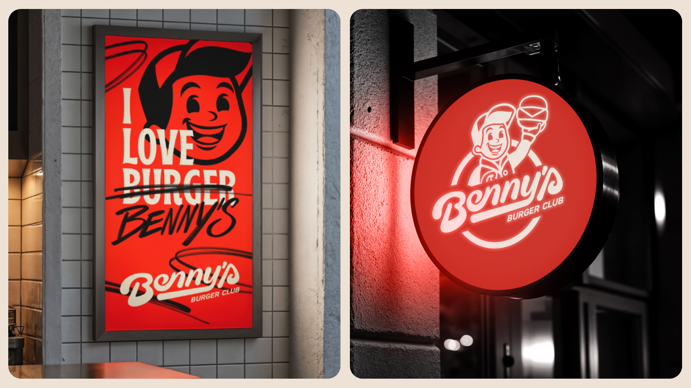
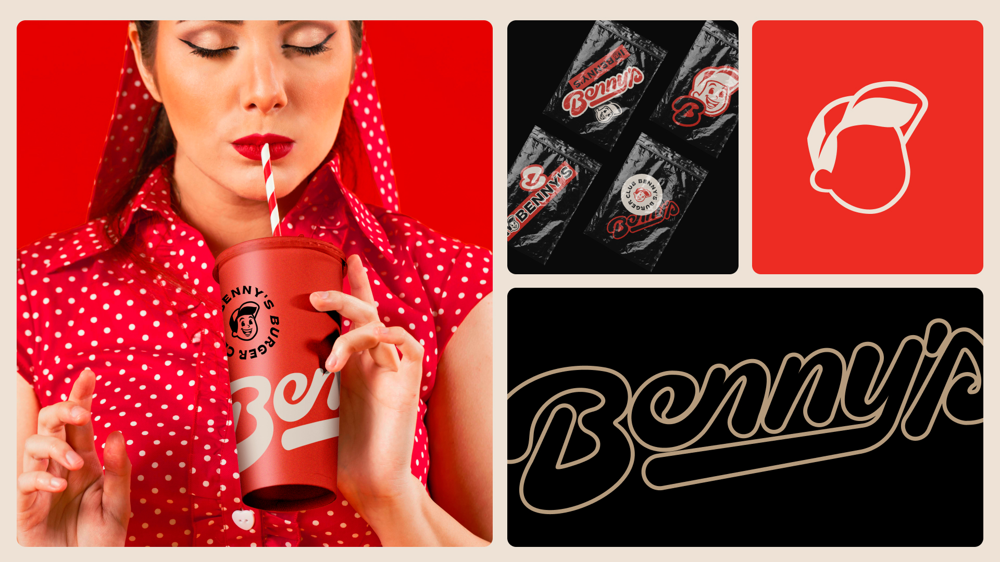
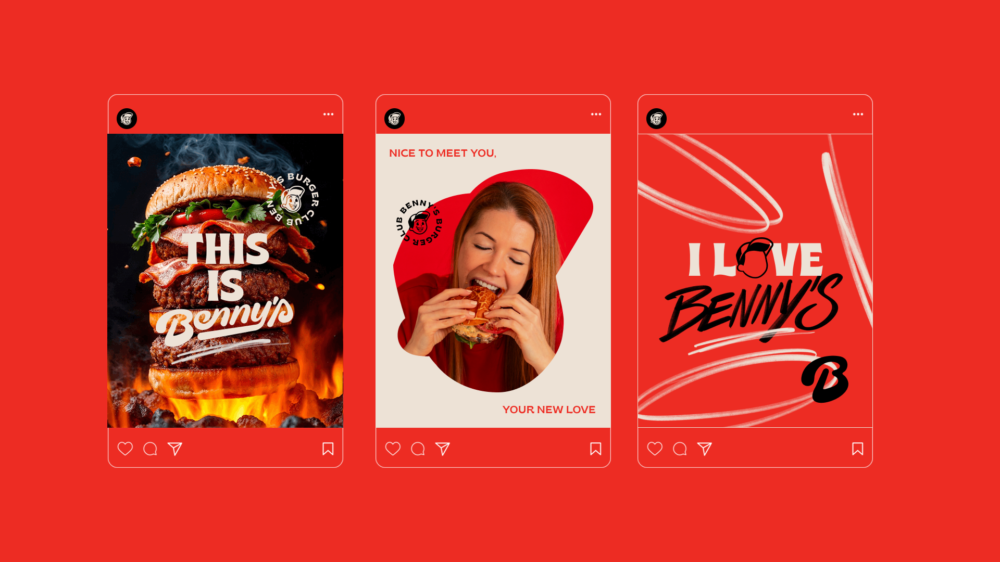
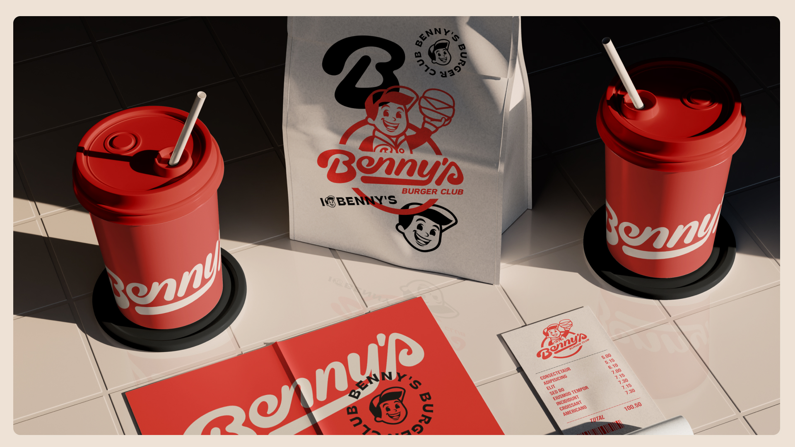
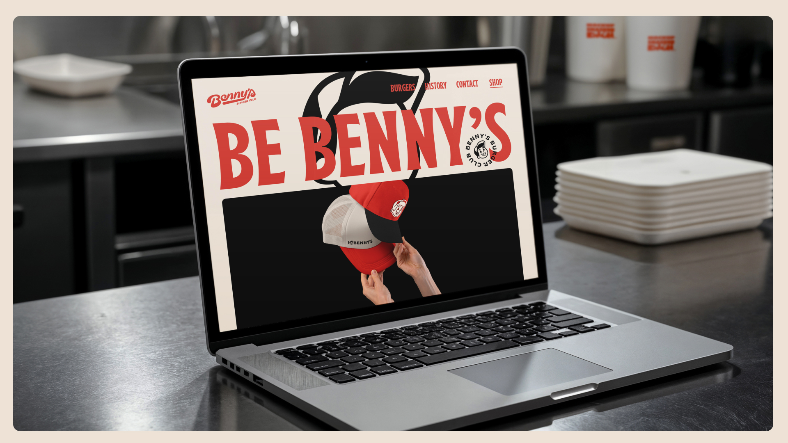
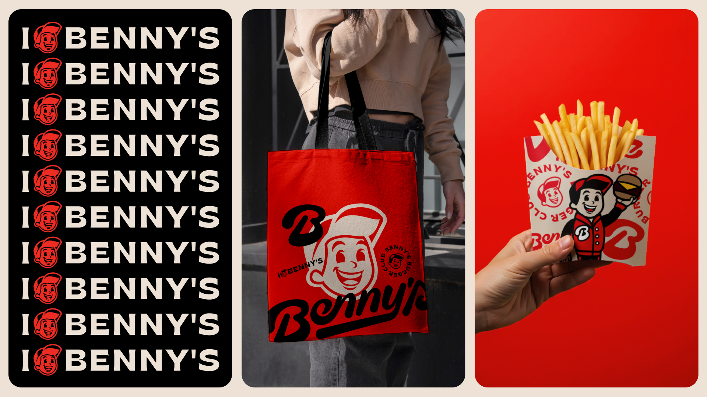
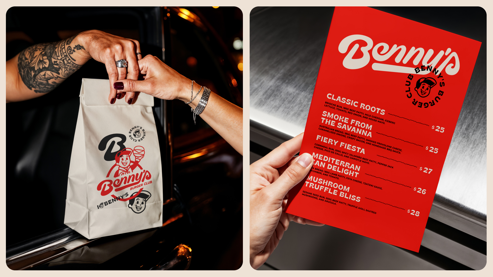
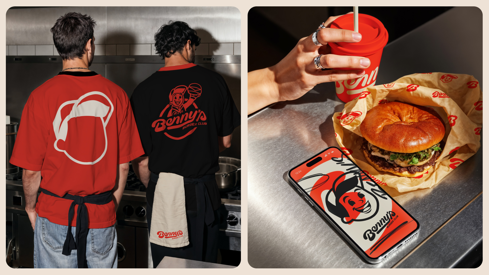
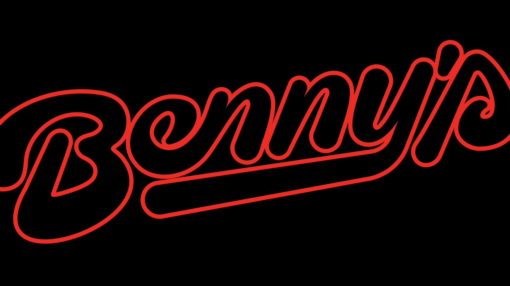

benny's
restaurante
brasil
Benny’s Burger transforma o clássico burger americano em uma experiência.
Nascida na Austrália e inspirada pela atmosfera dos diners norte-americanos, a marca construiu sua identidade misturando cultura pop, street food e uma energia retrô que atravessa gerações.
O novo sistema visual nasce para acompanhar essa evolução. Mais do que um redesign, a proposta foi criar um universo gráfico completo, capaz de transmitir autenticidade, nostalgia e presença contemporânea ao mesmo tempo.

A tipografia personalizada traz curvas marcantes, ritmo e atitude. O desenho das letras conversa diretamente com o espírito vintage dos grandes diners americanos, enquanto a construção moderna garante força, legibilidade e personalidade própria em qualquer aplicação. O mascote reforça esse território afetivo da marca, criando reconhecimento imediato e aproximando a experiência visual do público de forma leve, icônica e memorável.
O resultado é uma identidade viva, expansiva e altamente responsiva.
Um sistema criado para funcionar com consistência em diferentes escalas e contextos, desde embalagens e sinalização até redes sociais, uniformes e campanhas. A marca ganha seis versões adaptáveis, além de selos, patterns e elementos gráficos que ampliam o repertório visual e fortalecem a presença da Benny’s em cada ponto de contato.

A estética combina o calor emocional das hamburguerias clássicas americanas com uma direção contemporânea mais limpa, dinâmica e estratégica. O retrô aqui não aparece como nostalgia parada no tempo, mas como linguagem reinterpretada com intenção, contraste e atitude.
Benny’s Burger continua sendo sobre burgers grandes, momentos barulhentos e experiências indulgentes. Mas agora tudo isso ganha uma identidade à altura da marca que ajudou a construir uma cultura própria dentro do cenário australiano de hamburguerias.






